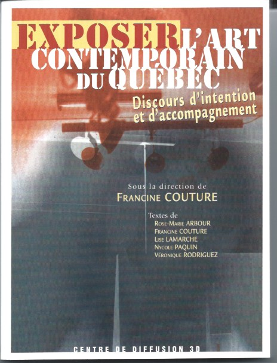
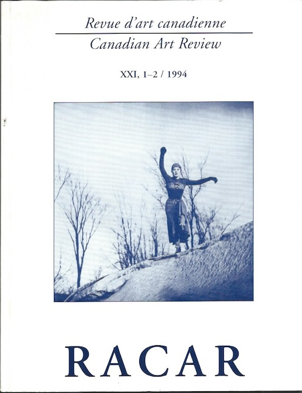
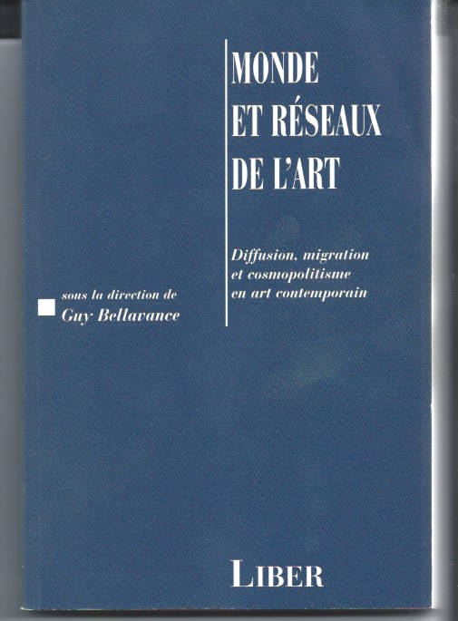
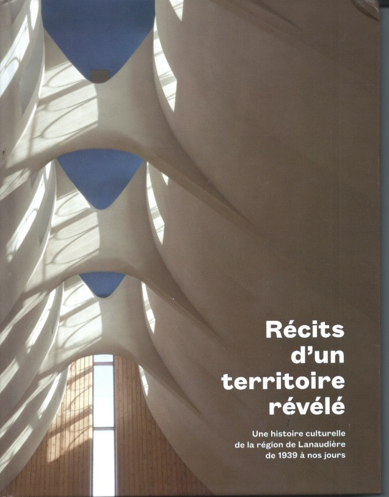

Expositions et enjeux identitaires : art national, urbain, régional, international
À la fin des années 1990, j’ai poursuivi mon étude de l’action des instances de médiation entre la production des œuvres et leur réception par le public en m’intéressant au rôle d’intermédiaire de l’exposition. J’ai constitué un groupe de recherche dont l’objectif était d’analyser les discours d’accompagnement des expositions collectives qui ont eu lieu à Montréal dans les années 1970 et 1980. Une interrogation réunissait les chercheures. Comment ces expositions collectives ont-elles joué un rôle de médiation dans l’élaboration de représentations de l’art du Québec, de ses traits artistiques et de ses rapports avec des réalités sociales et culturelles ? C’est en étudiant les catalogues d’exposition, les communiqués et les documents non publiés qu’elles ont répondu à ces interrogations. Ont contribué à cette recherche Rose-Marie Arbour qui a analysé les expositions des femmes artistes, Nycole Paquin, les catalogues d’exposition de sculptures, Lise Lamarche, les expositions de photographies et Véronique Rodriguez, deux expositions majeures, qu’ont été QUÉBEC 75 et Aurora Borealis. Ma contribution a été l’étude des expositions ayant affiché l’identité montréalaise des œuvres exposées. Les résultats de cette étude ont été publiés dans Exposer contemporain au Québec, discours d’intention et d’accompagnement (1).
Cette recherche était en phase avec la réflexion d’historiens d’art, de théoriciens et de sociologues de l’art et de la culture qui ont fait de l’exposition un nouvel objet d’étude en soulignant son rôle de médiation sur l‘apparition publique des œuvres. Ils ont considéré l’exposition comme un énoncé résultant de l’intentionnalité d’un/une commissaire dont l’objectif est de construire des narrations historiques, esthétiques ou symboliques (2). Certains d’entre eux ont souligné la portée identitaire de l’exposition en faisant valoir qu’elle peut produire de nouveaux sens relevant d’une rhétorique politique. Ces nouveaux sens sont l’expression de systèmes stratégiques de représentation qui prennent part à l’affirmation de divers projets identitaires, qu’ils soient d’ordre national, communautaire, ou relevant de l’identité des genres (3). On a souligné la formation des communautés de goûts réunissant des acteurs du monde de l’art issus des domaines de la production et de la diffusion artistique, auxquels se joignent des collectionneurs et un public. Ils se rassemblent autour d’un corpus d’œuvres dans lequel ils reconnaissent leurs propres valeurs esthétiques et sociales. Ces expositions traduisent la vision qu’une communauté de goûts se donne d’elle-même, et consolident ainsi son identité (4).

L’exposition comme affirmation d’une identité nationale
Mon étude des expositions affichant l’identité montréalaise des œuvres exposées se situe dans la continuité de mon analyse comparée des expositions d’art québécois et canadien, ayant eu lieu dans les années 1960, et destinées à la scène artistique internationale. Cette étude a démontré que les commissaires avaient conjugué de manière différente des intérêts artistiques et politiques en désignant les œuvres exposées comme une expression d’une identité nationale (5). J’ai relevé ce que Bourdieu a qualifié de lutte de classement des catégories artistiques définissant la modernité artistique canadienne, lesquelles n’étaient pas détachées de toute rhétorique politique. L’exposition La peinture canadienne moderne, 25 années de peinture au Canada-français, présentée à Spolète, avait pour objectif d’imposer l’abstraction gestuelle et géométrique du Québec sur la scène internationale en affirmant que ce courant était en phase avec la modernité artistique de cette scène. Elle affirmait que l’automatisme et le post-automatisme étaient dans la filiation de la modernité parisienne et européenne. De plus, son titre accordait à la culture artistique canadienne-française un rôle crucial dans l’émergence de la modernité artistique canadienne. Les responsables de Canada art d’aujourd’hui et Canada 101 avaient un autre objectif, celui de promouvoir l’américanité de l’art canadien. Canada art d’aujourd’hui a désigné l’abstraction chromatique et le pop art comme des figures marquantes de la modernité canadienne. L’exposition avait également pour mission de diffuser une représentation nationale et unitaire de l’art contemporain canadien sans accorder une priorité à un centre artistique des provinces du pays. Des acteurs du milieu de l’art parisien ont dénoncé le fait que l’exposition portait atteinte au pouvoir hégémonique de Paris sur la scène internationale. Ils n’avaient pas tort, car l’inclusion de l’art canadien dans l’axe Canada – New York a été également le postulat de l’exposition Canada 101 qui, en présentant le formalisme chromatique comme la nouvelle figure de la modernité artistique, mettait aussi en valeur l’américanité de l’art canadien. Bien que cette lutte ait été spécifique au champ artistique, son analyse a souligné qu’elle s’est déroulée dans un contexte politique structuré par un affrontement opposant les visions des cultures nationales, canadienne et québécoise.

La montréalisation de l’art contemporain
Les expositions collectives présentées dans les années 1970 et 1980 ont renouvelé ces représentations de l’inscription territoriale de l’art contemporain du Québec en affichant l’identité montréalaise des œuvres. Leur analyse a démontré que cette stratégie identitaire a établi de nouvelles relations avec les scènes artistiques locales, nationales et internationales (7).
Mon étude a distingué deux périodes de l’histoire de ce phénomène de la montréalisation de l’art contemporain. Dans les années 1970, des expositions ont souligné leur ancrage dans le contexte socioculturel local en mettant en vue des œuvres dont le propos était la ville elle-même. Elles ont ainsi donné à l’exposition le statut d’un espace public. Montréal plus ou moins qualifiée d’exposition-forum présentée au Musée des beaux-arts de Montréal et l’exposition-œuvre Corridart sont des exemples de cette catégorie d’expositions. En faisant cohabiter des objets d’art et des documents issus de la pratique sociale, Montréal plus ou moins constituait un lieu d’échanges ouverts à la communauté de citadins engagés dans les débats sur la transformation du paysage urbain par l’administration municipale. Dans l’espace du musée, des œuvres d’art conceptuel et d’art d’environnement côtoyaient des photographies documentaires, des bandes dessinées et des présentations visuelles de groupes de militants ou d’experts en urbanisme, critiques de la conception du développement de la ville. L’exposition-œuvre Corridart présentée sur la rue Sherbrooke regroupait des œuvres intégrant des éléments de leur site d’installation, lesquelles conviaient la communauté de citadins à une réappropriation à la fois symbolique et physique de l’espace de la ville. Une majorité d’entre elles ont transformé la rue Sherbrooke en un lieu de mémoire. Certaines ont signalé des lieux et des édifices témoins d’une vie disparue. D’autres œuvres ont créé des situations relevant beaucoup de la contemporanéité de la ville que de son passé, telle l’expérimentation de la ville comme lieu de consommation ou comme réseaux de communication, ou d’expériences formelles propres à l’espace urbain. Ces œuvres étaient accompagnées de photographies réunies sous le titre Mémoire de la rue représentant des événements de l’histoire de la rue Sherbrooke et se déployant sur toute la longueur de son parcours (8).

Les expositions ayant eu lieu dans les années 1980 n’avaient pas cette portée communautaire, ou ne relevaient pas d’un projet de changer la ville. Elles découlaient beaucoup plus d’une stratégie de diffusion culturelle affichant l’identité montréalaise du monde de l’art dans lequel elles circulaient. L’exposition Montréal tout-terrain, a regroupé des artistes de la jeune génération et a présenté leurs œuvres dans le bâtiment désaffecté de la clinique Laurier. La métaphore géologique contenue dans le titre de l’exposition affichait la pluralité esthétique de cette exposition. Montréal tout-terrain se réclamait du décloisonnement des frontières des catégories artistiques. Témoignant de la vitalité créatrice de ces jeunes artistes, elle visait leur inclusion dans la scène artistique montréalaise.
D’autres expositions ont eu davantage pour objectif d’imposer le label art contemporain montréalais sur les scènes artistiques canadienne et internationale. Leurs commissaires ont conçu le monde de l’art contemporain comme un espace transnational, polycentrique doté d’une multiplicité d’entrées. Ils ont soutenu que Montréal était un centre caractérisé par son double ancrage européen et américain et sa dualité linguistique ne pouvait que favoriser l’accès de l’art contemporain montréalais à la scène mondiale de l’art contemporain (9). Cette stratégie de diffusion était en synchronie avec la transformation de l’espace internationale de l’art contemporain qui, comme l’a relevé Raymonde Moulin, a connu une extension géographique par l’apparition d’un nombre important d’événements artistiques résultant de la vitalité de nouveaux centres artistiques dans différentes régions du globe (10). Ces expositions ont joué un véritable rôle initiateur en mettant en place, à l’intérieur du monde de l’art montréalais, un double mouvement culturel oscillant entre la valorisation de la scène locale et le développement de réseaux de diffusion transnationaux. Les expositions intitulées Montréal-Berlin 88-89, Montréal-Genève, Montréal art contemporain, Montréal 89, Aspects de la photographie québécoise sont exemplaires de cette stratégie visant l’insertion du label art montréalais dans des réseaux de diffusion de la scène internationale de l’art contemporain. Elles ont mis en circulation des œuvres caractérisées par leur hybridité des moyens d’expression qui remettait en question les principes disciplinaires du modernisme. Des expositions présentées sur la scène artistique canadienne ont découlé d’une stratégie similaire. (Montréal, La ruse historique). Les commissaires et les artistes fréquentaient un même sous-segment de l’art contemporain formé par les centres d’artistes et les galeries voués à la promotion de l’art actuel. (Optica, Vehicule Art, les galeries d’art Yagima, Gilles Gheerbrant et Jolliet). Le Mois de la photo créé en 1989 est une autre figure exemplaire de cette stratégie axée sur l’insertion de l’événement dans des réseaux de diffusion transnationaux tout en installant une collaboration avec des organismes de diffusion de la scène locale (11). Ses organisateurs ont inscrit le Mois de la photo dans le réseau mondial d’événements qui s’était développé dans différentes villes d’Europe, des États-Unis et d’Amérique du Sud, et qui avait pour but la légitimation de la photographie dans le monde de l’art contemporain. En collaborant avec des organismes œuvrant dans ces villes, le Mois de la photo a également exposé, dans les lieux de la scène artistique locale, des œuvres circulant sur la scène mondiale. Ce qui a favorisé la cohabitation des œuvres d’artistes venant d’ailleurs avec celles du monde de l’art montréalais.
Retenons que les expositions, affichant le label art montréalais à partir des années 1980, ont permis aux artistes de la scène artistique montréalaise d’exercer leurs pratiques «ici» et d’être présents « ailleurs » sans être obligés de passer par l’exil comme l’ont fait les artistes des années 1950.
L’affirmation d’une culture artistique contemporaine en région
Le Musée de Joliette m’avait demandé de collaborer à la publication d’un ouvrage collectif sur l’histoire de Musée d’art de Joliette (12). Je me suis intéressée à la création d’un monde de l’art contemporain dans cette ville. J’ai relevé qu’entre les années 1970 et 1990, des artistes et des responsables de la diffusion ont mis en place un monde de l’art contemporain par la création d’ateliers collectifs, l’ouverture de galeries d’art et autres lieux de diffusion, la publication de revues culturelles et la réalisation d’expositions en collaboration du Musée d’art de Joliette. Tout en consolidant les conditions de la vie artistique de la scène locale ainsi que son ancrage communautaire, les responsables de ces réalisations ont également inscrit leurs activités sur les scènes artistiques nationale et internationale. Ils se sont inscrits dans le réseau national des Centres d’artistes et ils ont participé à des événements situés dans des villes européennes. J’ai aussi observé que ces activités de diffusion ont contourné le pouvoir de légitimation du centre artistique qu’est la scène artistique montréalaise. Ils ont mis en place des stratégies territoriales qui ont allié leur ancrage communautaire et l’ouverture à l’international. Cette étude s’est située dans la continuité des travaux des sociologues Andrée Fortin, Guy Sioui-Durand et Fernand Harvey qui ont observé que, depuis les années 1970, on a assisté à l’autonomisation de la vie culturelle régionale à l’égard d’institutions de grands centres artistiques. Ce phénomène a été favorable à l’émergence d’un monde de l’art en région.

L’entrée du label art africain contemporain sur la scène mondiale de l’art contemporain
Pour donner suite à l’invitation à prononcer la conférence inaugurale du colloque tenu à l’ACFAS sur le thème Arts des mondes/mondes des arts : pluralité des objets, pratiques et discours dans la francophonie, j’ai entrepris une nouvelle étape de mon analyse du rôle de médiation joué par l’exposition en m’intéressant à l’inscription d’œuvres considérées par la scène artistique internationale comme étant à sa périphérie. La thématique de ce colloque proposait une réflexion sur les nouvelles aires géographiques de la scène artistique, manifestations de sa mondialisation. L’exemple de l’entrée du label art africain contemporain sur la scène internationale de l’art contemporain m’est apparu exemplaire de ce phénomène (13). Mon étude s’est appuyée sur des récits de critiques et théoriciens de l’art qui avaient constaté, qu’au début des années 1990, l’émergence du label art africain contemporain avait été favorisée par la tenue d’expositions sur la scène internationale de l’art contemporain. Ils ont noté que cette émergence ne s’était pas produite dans une première étape sur les scènes artistiques nationales et locales, mais s’était inscrite dans la programmation d’expositions des grandes institutions artistiques. J’ai procédé à l’analyse de ce phénomène par l’étude de ces expositions et j’ai démontré que des commissaires d’exposition avaient acquis une reconnaissance des instances de la scène internationale de l’art contemporain; ce qui leur a donné accès aux ressources des grands organismes de diffusion, dont les biennales et les musées. J’ai également observé que les expositions avaient été propices à la formation et à la consolidation de réseaux de collaboration réunissant des artistes, des commissaires d’expositions, des critiques d’art provenant d’une nouvelle génération d’origine ou de descendance africaine. Plusieurs d’entre eux faisaient partie de diasporas africaines de sorte que ces expositions ont favorisé la constitution d’une communauté transnationale. Ils ont élaboré de nouveaux cadres théoriques pour penser la pluralité des contenus des œuvres réunies sous le label art africain contemporain, remettant ainsi en question son homogénéité. Les commissaires, les théoriciens et les artistes se sont interrogés sur la notion d’authenticité de l’art africain contemporain en regard de divers paramètres tels que son hybridité, son ancrage dans la mondialisation de la culture, le nomadisme des artistes et les modes d’inscription territoriale de leurs pratiques. Les expositions ont donc joué un rôle déterminant sur la mise en place de contextes d’énonciation de ces discours critiques qui ont remis en cause l’autorité culturelle des métropoles artistiques et les conceptions exclusivement occidentales de l’histoire de l’art. Leurs commissaires ont aussi contribué à l’élargissement géographique du monde de l’art contemporain en faisant circuler des expositions sur des scènes artistiques de villes africaines dans le but d’établir des contacts avec le monde international de l’art contemporain.
Références
- Exposer contemporain au Québec, discours d’intention et d’accompagnement., sous la direction de Francine Couture, Montréal, Centre de diffusion 3D, l, 2003.
- Jean-Marc Poinsot, « Les grandes expositions. Esquisse d’une typologie », Les Cahiers du Musée d’art moderne, no. 17-18, 1986, p. 122-140. Philippe Hamon, Introduction, Expositions, littérature et architecture au XIXe siècle, Paris, Josée Corti, p. 17. Michael Baxandall, « Exposer l’intention. Les conditions préalables à l’exposition visuelle des objets à fonction culturelle », Les Cahiers du Musée d’art moderne, no.4, printemps 1993, p. 34-43.
- Bruce W. Ferguson, « Exhibition, Rhetoric, material speech utter sens », Thinking about Exhibitions, sous la direction de Reesa Greenberg, Bruce W. Ferguson, Sandy Nairme, New York, London, Routledge, 1996, p. 175-190. Thimothy W. Luke, Show of Force Power, Politic Ideology in Art Exhbitions, Durham and London, Duke University Press, 1992.
- Thomas McEvilley, « Ouverture de piège : l’exposition post-moderne Magiciens de la Terre », Les magiciens de la terre, Paris, Centre Georges-Pompidou, 1988, p. 20-23.
- La peinture canadienne moderne, 25 années de peinture au Canada-français présentée au Festival de Spolete en 1962. Canada art d’aujourd’hui, réalisée par la Galerie nationale du Canada en 1968, présentée à Paris, Bruxelles, Rome et Lausanne et Canada 101 organisée par le Conseil des Arts du Canada en 1967 et présentée au Festival d’Édimbourg.
- Francine Couture « L’exposition de la modernité artistique, lieu de construction de l’identité nationale », Racar, vol. 21, n° 1-2, 1994, p. 32-42. Francine Couture, « L’exposition à dénomination nationale durant les années 1960 », La nouvelle culture régionale, sous la direction de Fernand Harvey et Andrée Fortin, Québec, IQRC, 1995, p.37- 48. Francine Couture, « L’exposition La peinture canadienne moderne, 25 années de peinture au Canada-français présentée au Festival des deux mondes à Spoleto a-t-elle échappé au de la Délégation du Québec à Paris? », Quand la culture québécoise se fait connaître au monde, sous la direction de Denis Saint-Jacques, Marie-Josée Des Rivières, Élizabeth Plourde, Montréal, Alias, 2024, p. 93-105.
- Francine Couture, « Expositions collectives et montréalisation de l’art contemporain », Exposer l’art contemporain du Québec, Discours d’accompagnement, sous la direction de Francine Couture, Montréal, Centre de diffusion 3D, 2003, p. 55-98. Francine Couture, « L’art du Québec exposé à l’étranger : une figure protéiforme », Mondes et réseaux de l’art, diffusion, migration et cosmopolitisme en art contemporain, sous la direction de Guy Bellavance, Montréal, Liber, 2000, p. 121-144. Francine Couture, « L’exposition comme lieu de construction identitaire : la montréalisation de l’art contemporaine », Produire la culture, produire l’identité, sous la direction d’Andrée Fortin, Québec, Les Presses de l’Université, 2000, p. 87-103.
- Francine Couture, « L’exposition Corridart : un cas de controverse esthétique et politique? », Art et politique, Bulletin d’histoire politique, vol. 9 no.3, été 2001, p. 13-23. Francine Couture, « Corridart, une exposition-œuvre à plusieurs voix », Vers une sociologie des œuvres, Tome 1, sous la direction de Jean-Olivier Majastre et Alain Pessin, Paris, L’Harmattan, p. 341-356.
- Francine Couture, « L’exposition et la ville : entre le local et l’international », Au prisme de l’art 2, Instantané de la recherche, Sociologie de l’art, OPuS ½, Paris, L’Harmatan, 2000, p. 119-130.
- Raymonde Moulin, Le marché de l’art à l’ère de la mondialisation et nouvelles technologies, Paris, Flammarion, coll. Dominos, p.74.
- Francine Couture, « Le Mois de la photo et la mondialisation de la scène artistique », Sociologies et sociétés, Les territoires de l’art, vol. XXXIV, no.2, automne 2002, p. 63-78.
- Francine Couture, « Récits de la constitution d’un monde de l’art contemporain » Récits d’un territoire révélé, une histoire culturelle de la région de Lanaudière de 1939 à nos jours, Joliette, Musée d’art de Joliette, 2014, p. 73-94.
- Francine Couture « L’exposition, un contexte de collaboration sur la scène mondiale de l’art : un cas de figure, l’art africain contemporain », Muséologie, vol. 9, no.1, 2018, p. 33-43.